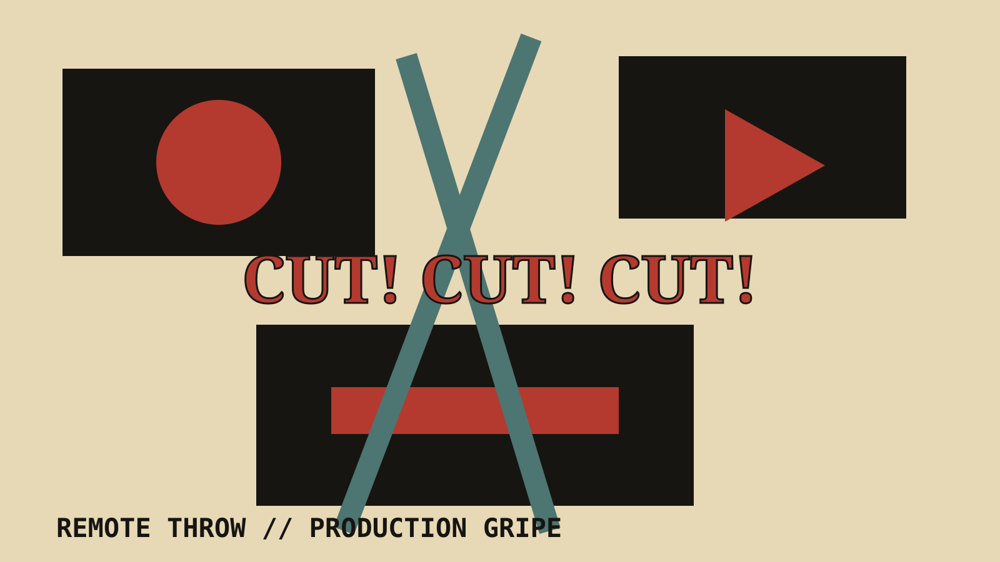

NOTE 03 OF 04 // Remote Throw
One camera cut too many

The move was good. I assume. I saw the start, three audience members, and the aftermath.
The camera found every possible angle except the one containing the move.
A wrestler started running. Cut. Somebody in the crowd stood up. Cut. The opponent was suddenly on the floor. Cut. Commentary shouted that it was incredible, and I had to accept their eyewitness account.
Fast editing can add panic. This was not panic. This was evidence being destroyed.